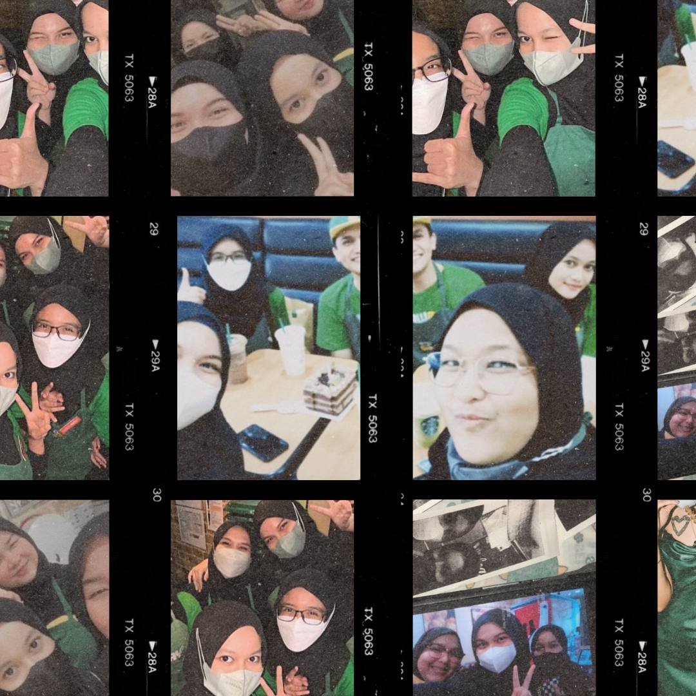
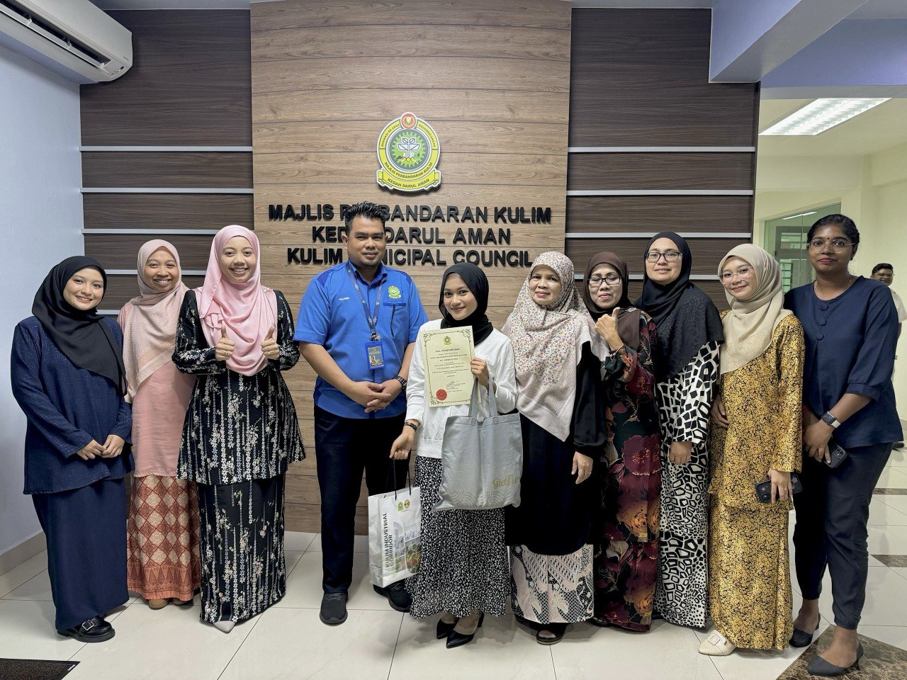

I worked at Subway after completing my SPM. My role involved preparing sandwiches, managing the cash register, and providing excellent customer service. I left after working for a while to pursue my diploma studies. This experience helped me improve my communication and multitasking skills in a fast-paced environment.
I worked at Tealive during my semester breaks. As a barista, I prepared bubble tea and other drinks, managed customer orders, and maintained cleanliness in the shop. This role taught me teamwork, time management, and the importance of providing great customer service in a busy café environment.
During my internship at Majlis Perbandaran Kulim, I was involved in administrative tasks such as data entry, filing, and assisting in customer services. This experience gave me valuable insights into government operations and helped me develop strong organizational and office skills.
